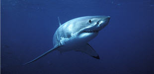

Le grand requin blanc appartient à l'ordre des lamniformes, c'est le plus grand poisson du monde et le plus redoutable des prédateurs, au sommet de la chaîne alimentaire des mers.
|  |
|
Où vit-il ? Dans toutes les mers tempérées, jusqu'en Alaska. On le retrouve sur les côtes de Californie, d'Australie méridionale, de Nouvelle-Zélande et d'Afrique du Sud.
Combien en reste-il aujourd'hui ? Depuis 15 ans, la population des grands requins blancs a diminué de presque 80%. Chaque année, toute espèce confondue (plus de 380 espèces en tout), plus de 100 millions de requins sont tués, mais ce chiffre est certainement sous-estimé.
Son seul prédateur, l'homme : La chair du requin est appréciée et utilisée pour les engrais et les fertilisants ; les ailerons, la peau, les dents, les cartilages sont également vendus car ils sont utilisés dans la fabrication de médicaments. La pollution perturbe les cycles de reproduction. Sa capture est devenue un véritable exploit depuis 1975, date de sortie du premier volet des «Dents de la mer», de Steven Spielberg.
A savoir : Le grand requin blanc est capable de détecter une goutte de sang dans 4 600 000 litres d'eau ! Cependant, sa réputation de "mangeur d'hommes" est usurpée : le grand requin blanc, comme les autres espèces, n'apprécie guère la chair humaine, et il confond souvent les phoques et les planches des surfeurs !